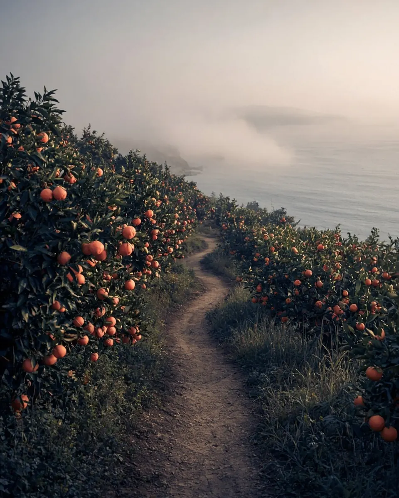
イメージ九州オルレ
さいき・大入島コース
舟隠、みかん畑、白浜海岸、そして360度パノラマの遠見山展望所。
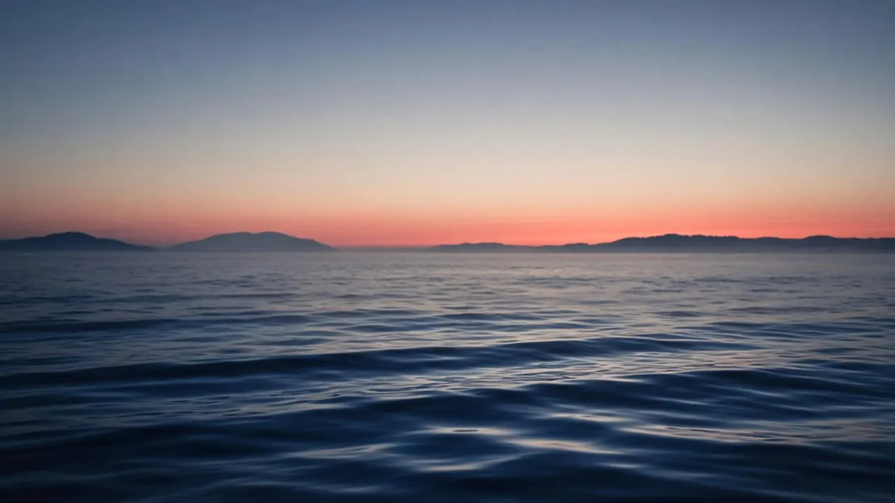


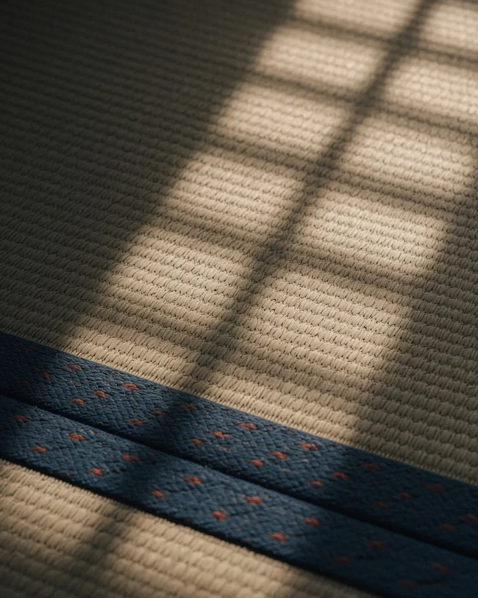
イメージ島ステイ
おひとりでも、グループでも。宿泊は一日一組の貸し切りです。旅館のような豪華さはありませんが、観光地ではない島の、古き良き日本の暮らしがあります。まるで実家に帰ってきたような、懐かしい場所です。
昭和の初めにタイムスリップしたような島。不便さを楽しみ、手づくりの料理を味わう旅です。
海岸線：国土数値情報（行政区域データ、国土交通省）を加工して作成。航路・乗り場・宿の位置は目安です（要確認）。
日本でいちばん近い離島、と言われる島
佐伯港（葛港）から船でわたります。歩きならマリンバス、車ならフェリー。どちらで来ても、海の上で時間の流れが変わります。
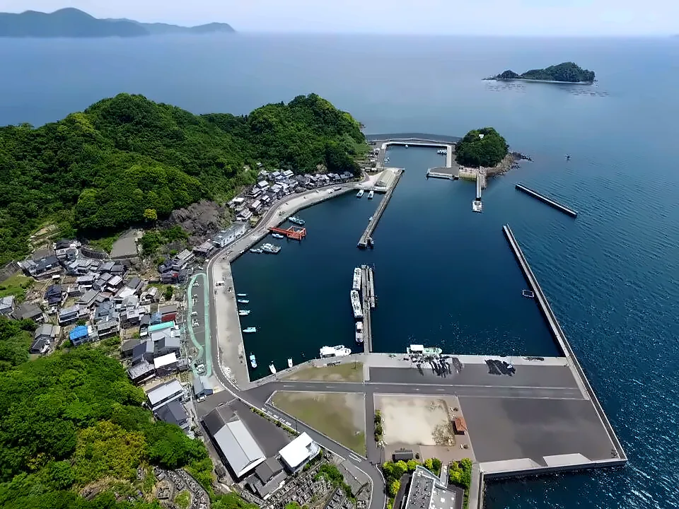
島の食卓
豊後水道の潮と温暖な気候が育てる、アジ、キビナゴ、タイ、イカ。そして良質な干物。「佐伯の殿様、浦でもつ」と言われるほど、昔から海の幸で知られる土地です。島では自給自足を基本に、安心できる手づくりの料理をお出しします。
ベジタリアンの食事にも対応します。特別料理（時価）はご予約時にご相談ください。アレルギー表示：要確認。
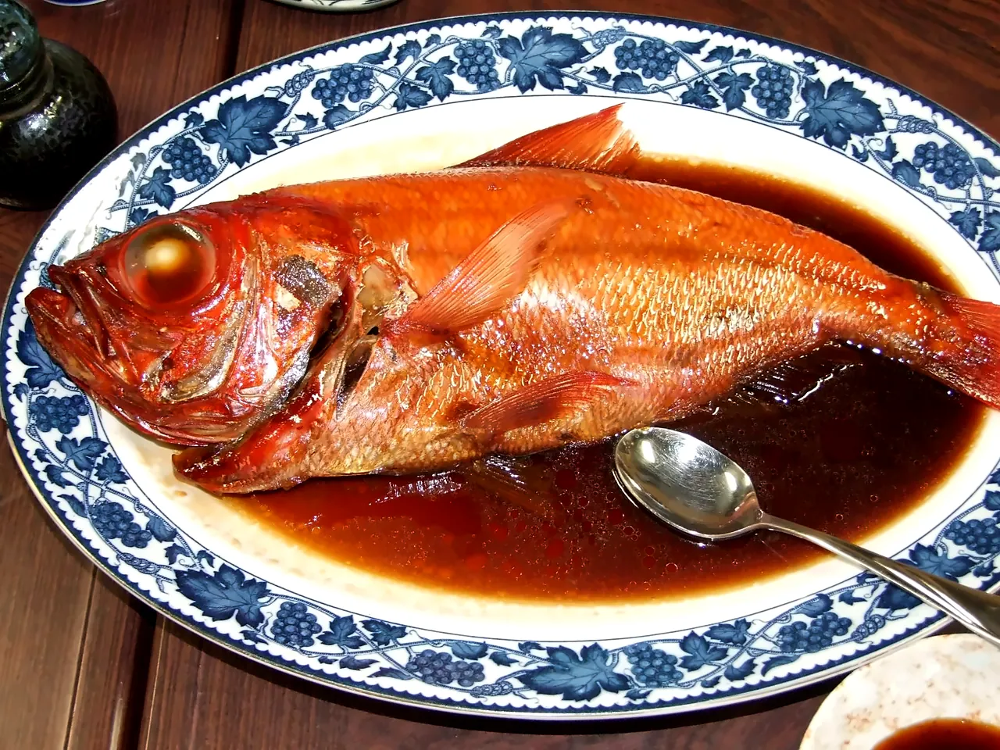
魚の煮付け01

アジのお造り02

島の膳03
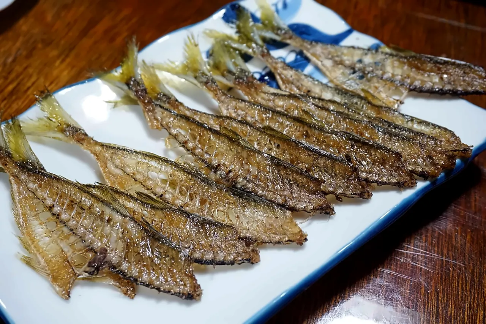
干物04
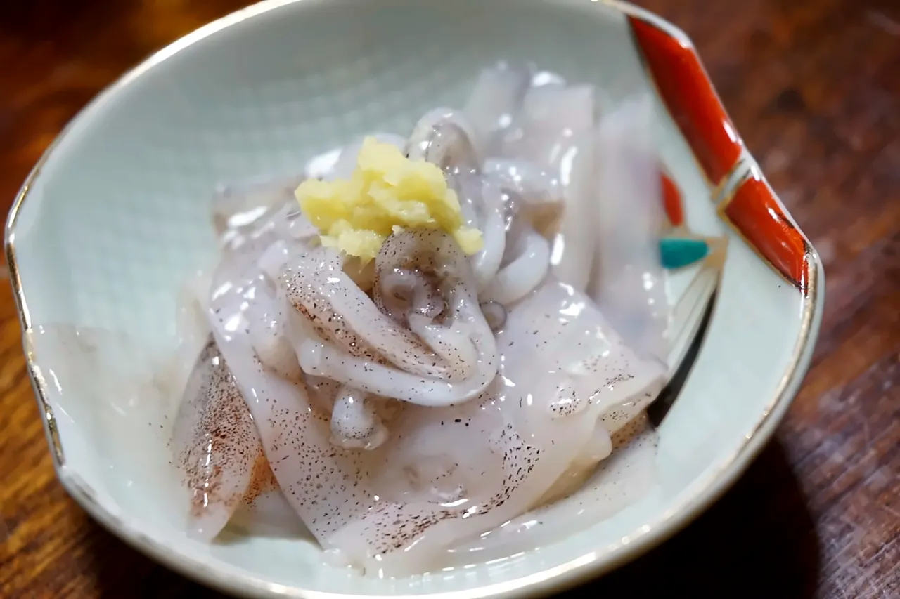
イカの刺身05
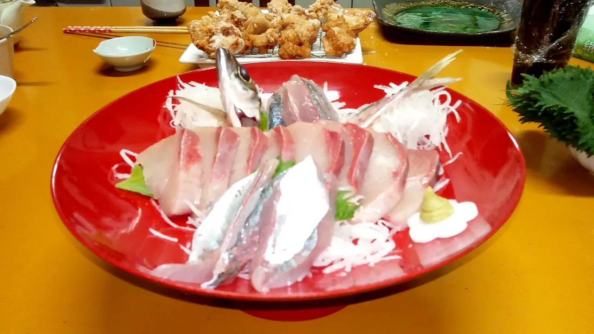
刺身の盛り合わせ06

焼き魚07
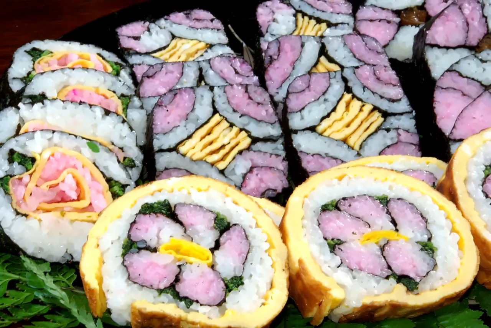
飾り巻き寿司08
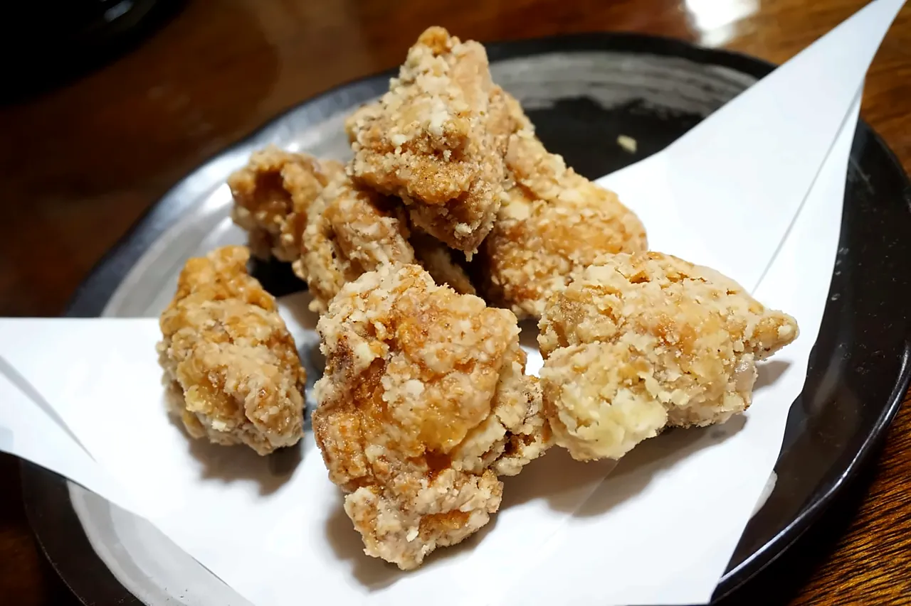
唐揚げ09
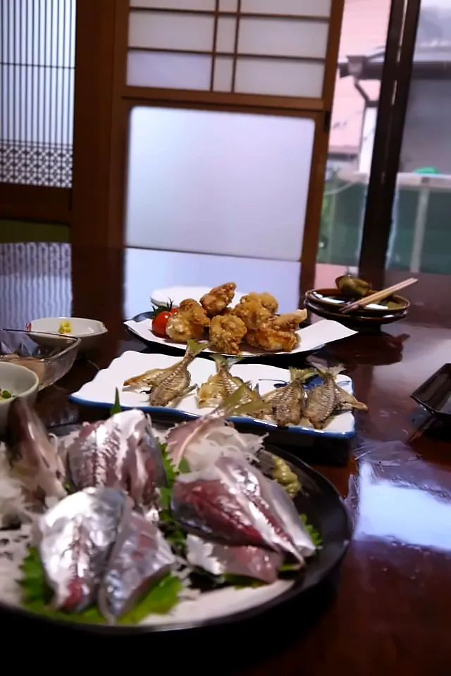
障子のそばの夕食10
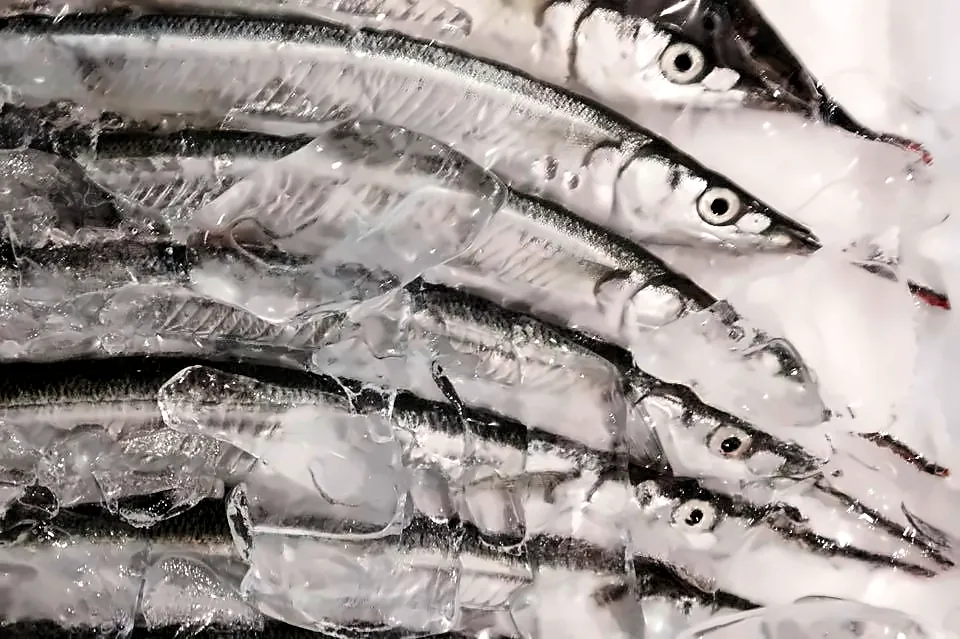
島の魚11
島で過ごす
島では自給自足が基本。歩いて、釣って、海を渡って温泉へ。

イメージ舟隠、みかん畑、白浜海岸、そして360度パノラマの遠見山展望所。

竿・仕掛け・エサはすべて用意。持ち帰りはクーラーボックスをご用意ください（発泡ケースもあります）。

船で行く海辺の温泉と、佐伯の町をめぐるオプション。内容と料金はお問い合わせください。
神武天皇の船を見送ったかがり火に由来すると伝わる火祭り。10mを超える松明が燃え上がり、一年の無病息災を祈ります。
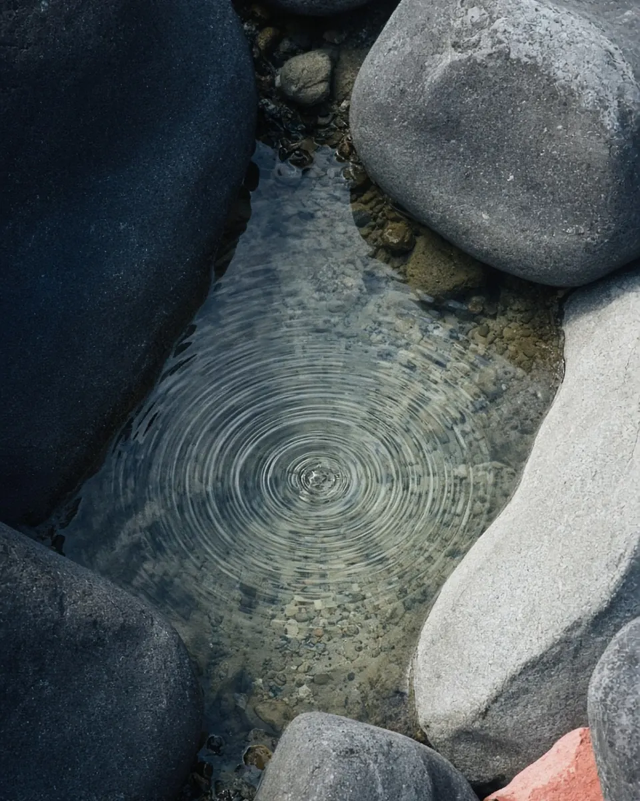
満潮 干潮 イメージ神話の島
東征の途中、神武天皇がこの島に立ち寄ったと伝えられます。水が足りないと嘆く人々のために弓を地に突き立てると、澄んだ水が湧き出しました。それが「神の井」。満潮には海に沈み、潮が引くと真水が湧く井戸です。島の人々が天皇の船を見送ったかがり火は、いまも「とんど火祭り」として続いています。
潮の満ち引き（イメージ）
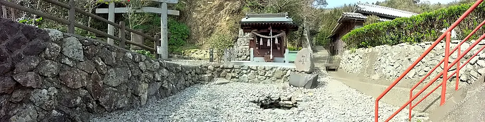
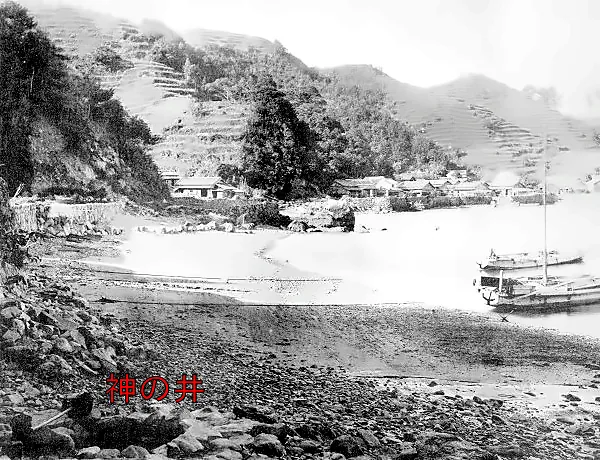
お客さまの声
Airbnbに掲載された実際のレビュー（2018〜2019年）を原文のまま掲載しています。一部は以前のヨット泊についての内容です。
What a magical experience... A beautiful well-kept secret of an island populated with the very friendliest people—beautiful sites around every corner, trees and trees full of tropical fruit, and so much incredible history (all of which I learned about thanks to our extremely hospitable and generous host and his lovely children who took very good care of us and gave us a tour of the island). I will always treasure this place in my memories!大分市民でも、釣り師以外は知らないような島ですが、行ってみたら自然の美しさはもちろん、海も山も楽しめる素晴らしい環境でした。宿もとても広くてリラックス出来ましたし、お料理が素晴らしかったです。また、丁寧に色々と教えてくださったり、気にかけてくださり楽しい滞在が出来ました。ありがとうございました。Nous avons passé la nuit sur le bateau d’Okuma. Nous ne nous attendions pas à cela mais ce fut une expérience surprenante et amusante. La mer est très calme et le voilier ne bougeait pas, bateau propre mais spartiate. Nous recommandons fortement d’opter pour le succulent dîner et petit déjeuner proposés qui sont d’un excellent rapport qualité-prix !実家に泊まるように過ごすことができます。採れたての新鮮な魚料理がたっぷりと出てきます。ありきたりなホテルの宿泊に飽きた旅行者や、島の歴史を聞きたい人にオススメです。Incredible stay on Okumas yacht. The family are the most amazing hosts! We ate fresh fish caught by Okuma and his daughter, the food his wife cooked in the guesthouse was the best we have had in Japan! During our stay we went to the beautiful sea onsen and did a hike around the island. We got a bit confused on which ferry to catch but the locals were very helpful pointing us to the marine bus near the supermarket. A must do experience in Japan!ホストのご夫婦はもちろん、子どもさんたちにもご家族みなさんにお世話になりました。家族ぐるみでのおもてなしが嬉しかったです。新鮮な海の幸をいただける食事も満足でした。I had a wonderful time staying at Okuma-san’s place. The views and scenery on the island were spectacular. I even got to participate in a festival that only happens once a year. As I had to leave really early to catch a train to my next destination, Okuma-san kindly took me back to Saiki port in his own boat as the regular ferry service had not started. Thanks for the great memories Okuma-san!GW中に2泊（1泊目はヨット泊、2泊目は民宿泊）させていただきました。「GWでも混雑していない場所で過ごしたい」と思ってこちらを訪れましたが、まさにその通りのんびりすることがでした。ご主人に船で釣りや対岸にある「塩湯温泉」に連れて行っていただき、ヨット泊も快適でした！さらに、民宿の海の幸メインのお料理はとても美味しかったです！島内のあちこちで釣りができ、トレッキングコースもありますので、ぜひまた訪れたいと思います。島のかたち